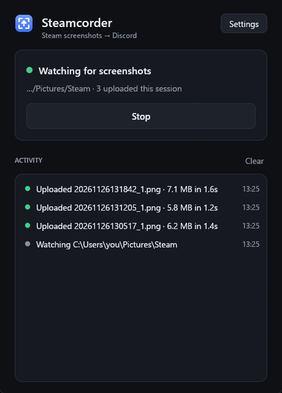
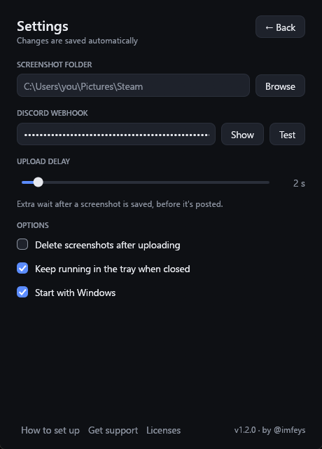
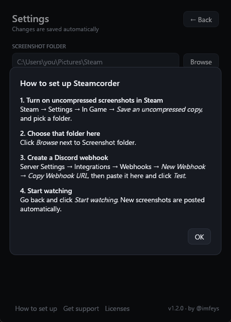

Auto-upload your Steam screenshots to Discord
Press F12 in any game. A few seconds later the screenshot is in your server's #screenshots channel. No bot, no manual uploading, just one small app in your tray.

How it works
Steamcorder watches the folder Steam saves your screenshots to and posts each new one through a Discord webhook.
Take a screenshot
In any Steam game, like you always do.
Steamcorder spots it
It waits until the file is fully saved, then uploads it.
Posted to Discord
Your friends see it in your server a few seconds later.
Everything you need, nothing you don't
Built for gaming communities, friend groups and clan servers that want a screenshots channel that fills itself.
Automatic uploads
Every new screenshot in your Steam folder is posted to Discord without you lifting a finger.
No bot needed
Paste one Discord webhook URL and click Test. No bot account or server permissions to set up.
Lives in your tray
Runs quietly in the background and can start with Windows, so it's always ready.
Reliable
Waits until each file is completely saved, and retries when Discord is busy or rate-limits.
Optional cleanup
Delete screenshots after they're uploaded to keep your disk tidy.
Any image, any tool
PNG, JPG, GIF, BMP and WebP, from Steam, ShareX, Xbox Game Bar, NVIDIA and more.
A small app that stays out of your way
A clean dark window, a handful of options, and a built-in setup guide.


Set up in 2 minutes
Download Steamcorder.exe, double-click it, then:
Turn on uncompressed screenshots in Steam
Steam → Settings → In Game → enable Save an uncompressed copy of my screenshots and pick a folder.
Choose that folder in Steamcorder
Open Settings and click Browse.
Create a Discord webhook
In Discord: Server Settings → Integrations → Webhooks → New Webhook → Copy Webhook URL. Paste it into Steamcorder and click Test.
Click Start watching
That's it. Steamcorder remembers your settings and picks up where it left off next time.
Frequently asked questions
How do I automatically send Steam screenshots to Discord?
Install Steamcorder, point it at your Steam screenshot folder, paste a Discord webhook URL and click Start watching. Every F12 screenshot is then posted to that channel.
Does it need a Discord bot?
No. It uses a standard Discord webhook, which any server admin can create in about 30 seconds.
Where does Steam save screenshots?
Steam stores compressed copies under Steam\userdata\<id>\760\remote. Steamcorder uses the uncompressed copy folder you pick under Steam → Settings → In Game, which is easier to find and gives full quality.
Does it work with non-Steam screenshots?
Yes. It uploads any new image saved to the folder you choose, whether it comes from ShareX, the Xbox Game Bar, NVIDIA or anything else.
What about large 4K screenshots?
Discord limits upload size per server (10 MB without boosts), and uncompressed 4K PNGs can exceed that. If one does, Steamcorder tells you in its activity list.
Is it safe?
It only reads the one folder you choose and only talks to the Discord webhook you provide. Nothing else is collected or sent anywhere. Windows SmartScreen may warn you because the app isn't code-signed yet: click More info → Run anyway.
Is it free?
Yes. Steamcorder is free to download and use on Windows 10 and 11 (64-bit).
How do I uninstall it?
Turn off Start with Windows, quit it from the tray icon, then delete Steamcorder.exe and the %APPDATA%\Steamcorder folder.
Start sharing your screenshots
Free for Windows 10 and 11. One small file, nothing to install.
Looking for older versions or release notes? See all releases.